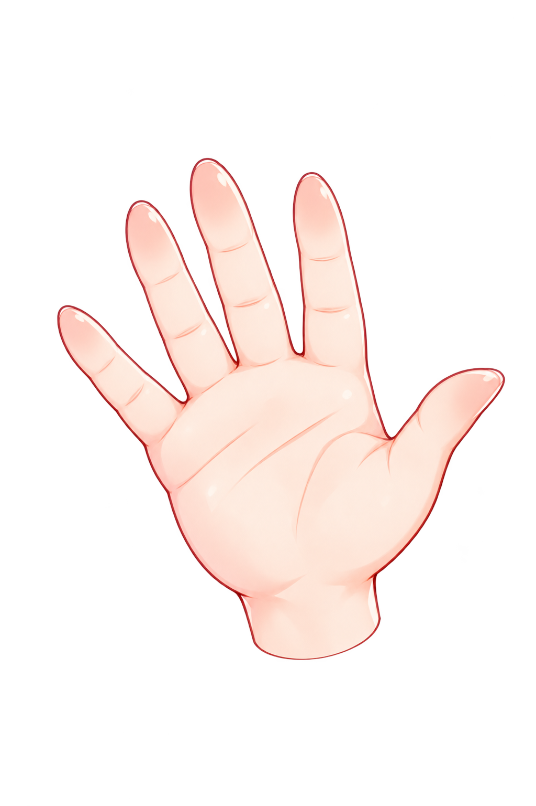
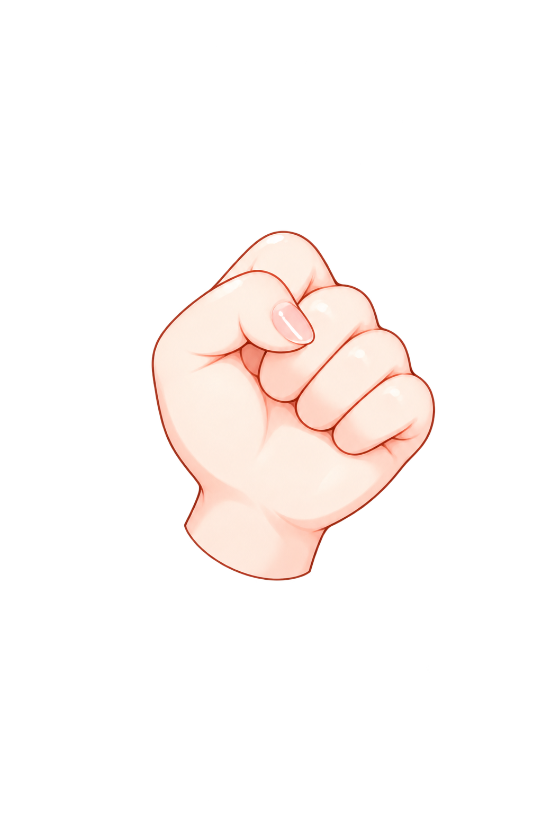
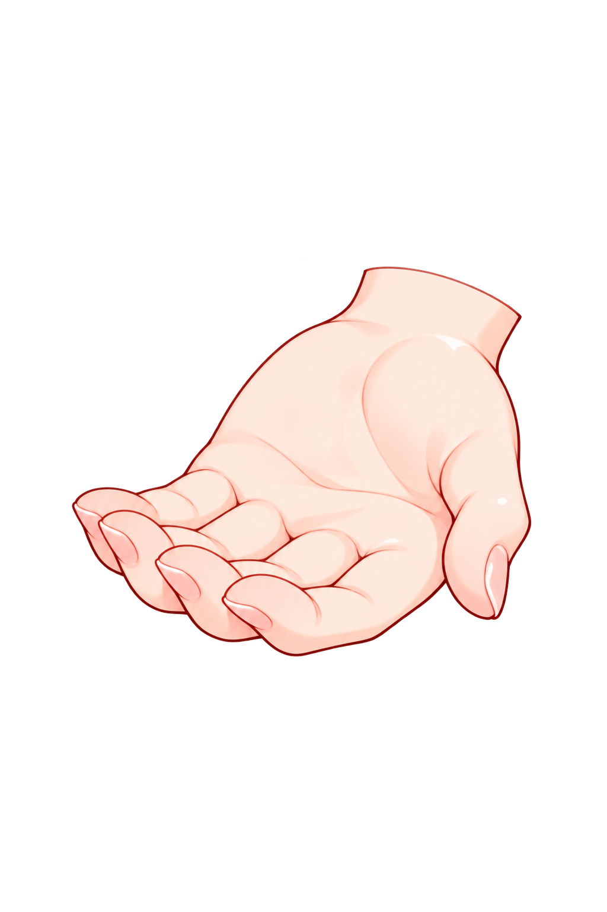
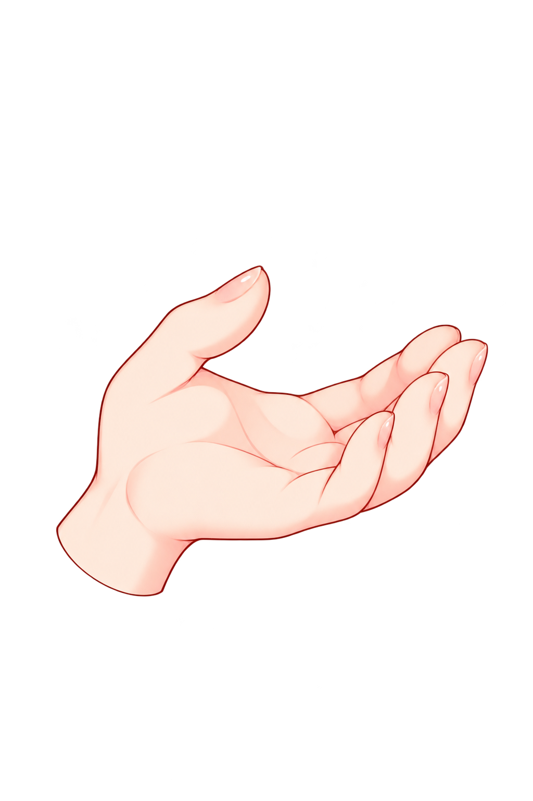

hand-right-wave

原生1024×1536 · 独立重绘hand-right-fist

原生1024×1536 · 独立重绘hand-right-cup

原生1024×1536 · 独立重绘hand-left-cup

原生1024×1536 · 独立重绘独立画布，按 hand-variants.json 的原图腕部锚点定位；不镜像，不裁切原图。

原生1024×1536 · 独立重绘
原生1024×1536 · 独立重绘
原生1024×1536 · 独立重绘
原生1024×1536 · 独立重绘